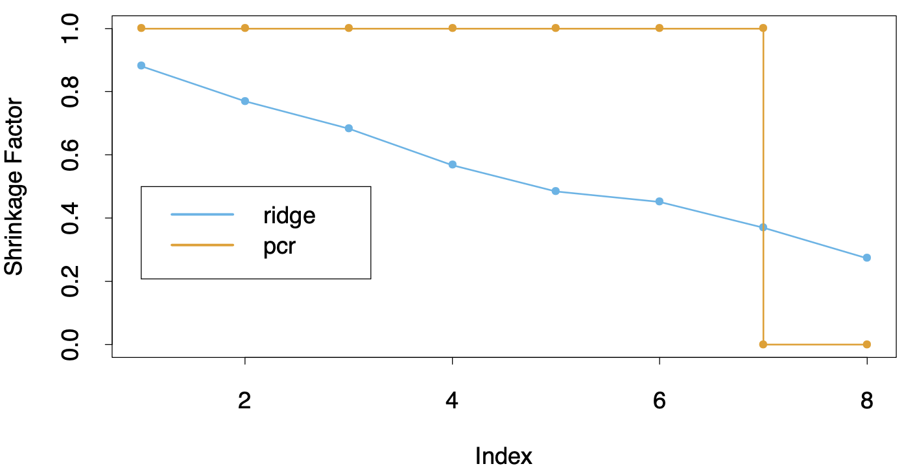

3.5 Methods Using Derived Input Directions¶
The methods in this section produce a small number of linear combinations \(Z_m\), \(m = 1, \dots, M\) of a large number of correlated inputs \(X_j\), and the \(Z_m\) are then used in place of the \(X_j\) as inputs in the regression.
3.5.1 Principal Components Regression¶
In this approach the linear combinations \(Z_m\) used are the principal components defined in Section 3.4.1. Principal components regression (PCR) depend on the scaling of the inputs, so typically we first standardize them. Since the \(\mathbf{z}_m\) are orthogonal, the regression is just a sum of univariate regressions:
This solution can also be expressed in terms of the \(\mathbf{x}_j\) (Exercise 3.13) where
For \(M < p\) we get a reduced regression. PCR is very similar to ridge regression: both operate via the principal components of the input matrix. Ridge regression shrinks the coefficients of the principal components, while PCR discards the \(p - M\) components, as depicted in the figure below.
{kind=link}
3.5.2 Partial Least Squares¶
Partial least squares (PLS) is not scale invariant, so we assume that each \(\mathbf{x}_j\) is standardized to have mean 0 and variance 1.
What optimization problem is PLS solving? It can be shown (Exercise 3.15) that PLS seeks directions that have high variance and have high correlation with the response, in contrast to PCR which keys only on high variance. In particular, the \(m\) th principal component direction \(v_m\) solves:
where \(\mathbf{S}\) is the sample covariance matrix of the \(\mathbf{x}_j\). The conditions \(\alpha^\top \mathbf{S}v_l = 0\) ensures that \(\mathbf{z}_m = \mathbf{X}\alpha\) is uncorrelated with all the previous linear combinations \(\mathbf{z}_l = \mathbf{X}v_l\). The \(m\)hat{phi}_m` solves:
Further analysis reveals that the variance aspect tends to dominate, and so PLS behaves much like ridge regression and PCR.
Warning
Add some explanations here.
If the input matrix \(\mathbf{X}\) is orthogonal, then PLS finds the least squares estimates after \(m = 1\) steps. Subsequent steps have no effect since \(\hat{\phi}_{mj}\) are zero for \(m > 1\) (Exercise 3.14). It can also be shown that the sequence of PLS coefficients for \(m = 1, \dots, p\) represents the conjugate gradient sequence for computing the least squares solutions (Exercise 3.18).
Warning
Add solutions to Exercise 3.14 and Exercise 3.18.